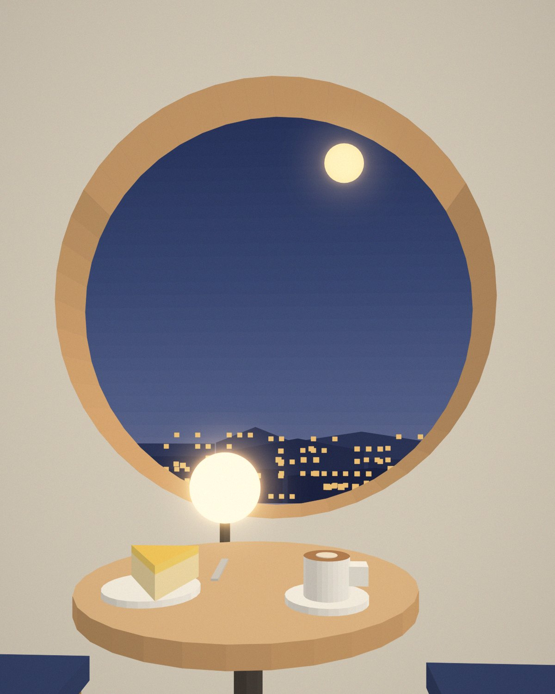
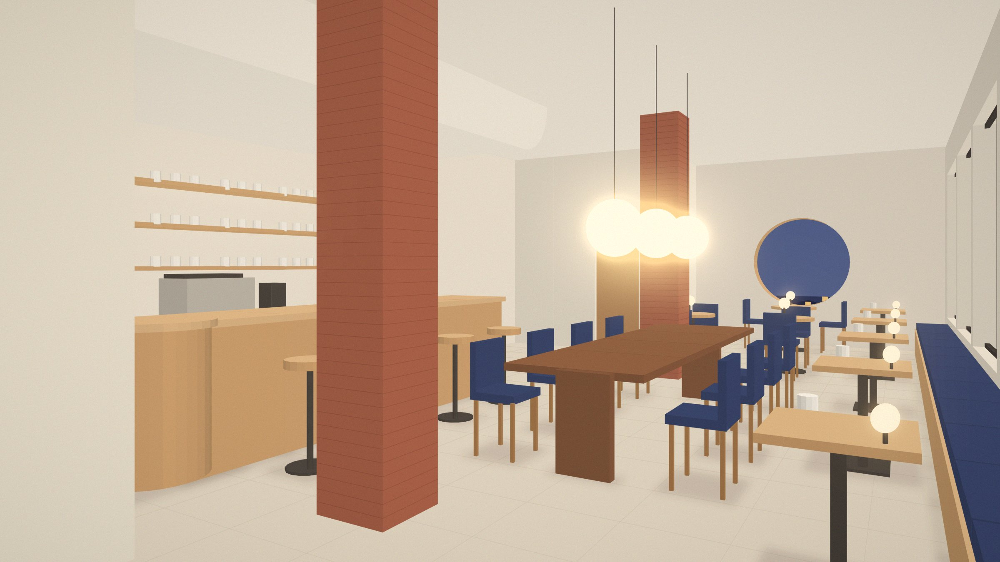
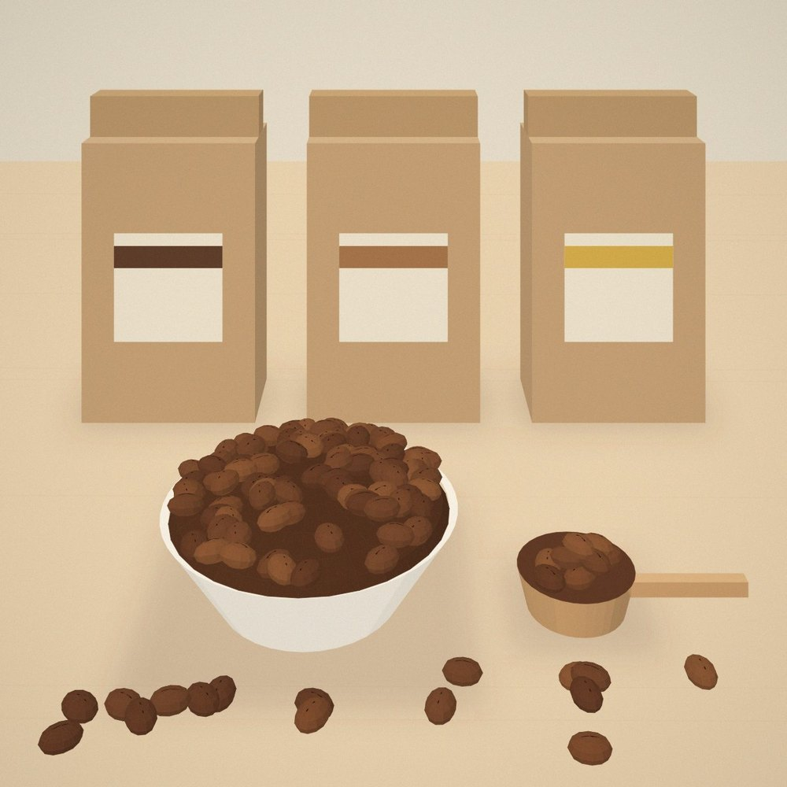

조용한 밤을 위한 한 잔
하루를 마친 저녁, 달빛 아래 잠시 머물다 갈 수 있는 곳을 생각하며 문을 열었습니다. 낮은 조명과 한 잔의 커피로 조용한 밤을 채웁니다.
- 18:00
- 문을 엽니다
- 02:00
- 불을 끕니다
- 37
- 가지 메뉴

달의 이름을 붙인 여섯 가지입니다. 색으로 먼저 맛을 짐작해 보세요. 시그니처 자세히 보기

하루를 마친 저녁, 달빛 아래 잠시 머물다 갈 수 있는 곳을 생각하며 문을 열었습니다. 낮은 조명과 한 잔의 커피로 조용한 밤을 채웁니다.

커피 메뉴는 원두를 골라 주문할 수 있습니다. 처음이라면 고소한 브라질 산토스를 권합니다.